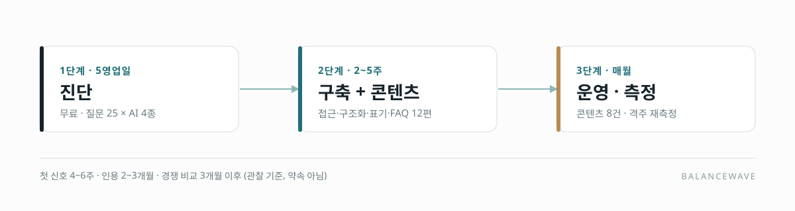

01
5영업일 · 무료
AI 검색 현황 진단
환자가 실제로 묻는 질문 25개를 설계하고, ChatGPT·Gemini·Perplexity·네이버 AI에 같은 조건으로 질의합니다(25 × 4 = 100회). 질문마다 언급(병원 이름이 나왔는가) · 인용(병원 페이지가 출처로 붙었는가) · 오류(AI가 틀린 정보를 말했는가)를 기록합니다.
진단 노트 1부 · 질문별 표 · 개선 우선순위 3개
서비스 · 진행 단계
네 가지 일을 한 사람이 끝까지 맡습니다. 진단한 사람이 구축하고, 구축한 사람이 매달 측정합니다. 중간에 담당자가 바뀌어 기록이 끊기는 일이 없습니다.
네 가지 일
1단계 진단은 무료입니다. 2단계부터 견적이 발생하며, 범위와 기간은 상담에서 정합니다.
01
5영업일 · 무료
환자가 실제로 묻는 질문 25개를 설계하고, ChatGPT·Gemini·Perplexity·네이버 AI에 같은 조건으로 질의합니다(25 × 4 = 100회). 질문마다 언급(병원 이름이 나왔는가) · 인용(병원 페이지가 출처로 붙었는가) · 오류(AI가 틀린 정보를 말했는가)를 기록합니다.
진단 노트 1부 · 질문별 표 · 개선 우선순위 3개
02
2~5주
AI 크롤러가 본문을 읽도록 접근 구조를 정상화하고, HTTPS·robots.txt·sitemap.xml·llms.txt를 정비합니다. MedicalClinic·Physician·MedicalWebPage·FAQPage 구조화 데이터를 넣고, 지도·포털과 홈페이지의 이름·주소·진료시간 표기를 한 기준으로 맞춥니다.
AI가 읽을 수 있는 병원 명의 1차 출처
03
2~5주 · 월 운영과 연결
진료과·검진 항목·장비·의료진·오시는 길을 기계가 읽을 수 있는 구조 페이지로 만들고, 환자 질문형 FAQ 12편을 씁니다. 원장님이 진료에서 겪은 일을 25년 현장의 언어로 정리하되, 진료 성과를 약속하는 표현은 쓰지 않습니다.
질문에 답하는 문서 — AI가 인용할 수 있는 형태
04
매월
콘텐츠 8건을 발행하고(자체 발행 4건 + 네이버 브랜드블로그 4건), 질문 세트를 고정한 채 격주로 다시 측정합니다. 월 1회 리포트에 새로 인용되기 시작한 질문·아직 비어 있는 질문·다음 달 보강 우선순위를 담고, AI가 틀리게 말한 항목의 정정 내역을 함께 적습니다.
월 1회 리포트 · 격주 측정 기록 · 정정 내역
로드맵
1단계는 5영업일, 2단계는 2~5주, 3단계는 매월 반복입니다.
1단계
5영업일 · 무료질문 25개 설계 → AI 4종에 100회 질의 → 질문별 언급·인용·오류 기록 → 경쟁 병원 비교 → 개선 우선순위 3개.
계약을 전제로 하지 않습니다. 진단 결과를 보고 2단계 진행 여부를 정하시면 됩니다.
2단계
2~5주크롤러 접근 정상화 · HTTPS · robots.txt·sitemap.xml·llms.txt · 구조화 데이터 4종 · 채널 표기 통일 · 구조 페이지와 질문형 FAQ 12편.
병원 홈페이지를 새로 만들지 않고도 진행할 수 있습니다. 다만 쿠키 인증처럼 본문을 가리는 구조는 손대야 합니다.
3단계
매월콘텐츠 8건 발행 · 격주 재측정 · 월 1회 리포트 · 오류 정정 · 기술 상태 점검.
측정 기록은 계약이 끝난 뒤에도 병원에 남습니다.

기대 시점
아래는 약속이 아니라 지금까지 관찰된 기준입니다. 반영 속도는 AI 모델과 경쟁 병원의 콘텐츠 양에 따라 달라집니다.
| 시점 | 보통 무엇이 보이는가 |
|---|---|
| 2~4주 | 새로 만든 페이지가 검색과 AI에 반영되기 시작 |
| 4~6주 | 일부 질문에서 병원 이름이 등장하는 첫 신호 |
| 2~3개월 | 병원 페이지가 출처로 인용되기 시작 |
| 3개월 이후 | 경쟁 병원과의 차이가 측정값으로 확인되기 시작 |
범위
포함되지 않는 항목은 병원이 직접 계약하시는 편이 비용과 소유권 면에서 유리합니다.
· AI 검색 현황 진단(질문 25개 × AI 4종)
· 크롤러 접근·HTTPS·robots.txt·sitemap.xml·llms.txt 정비
· MedicalClinic·Physician·MedicalWebPage·FAQPage 구조화 데이터
· 진료과·검진·의료진·오시는 길 구조 페이지
· 질문형 FAQ 12편과 월 콘텐츠 8건
· 격주 재측정과 월 1회 리포트, 오류 정정
견적
범위가 병원마다 달라 금액을 먼저 정해 두지 않았습니다. 1단계 진단 결과를 보고 필요한 범위를 정한 뒤 안내합니다.
가격과 기간은 상담에서 안내합니다. 가격표 공개 여부 준비 중
어느 질문에 나오고 어느 질문에 안 나오는지 먼저 확인하십시오. 계약을 전제로 하지 않습니다.